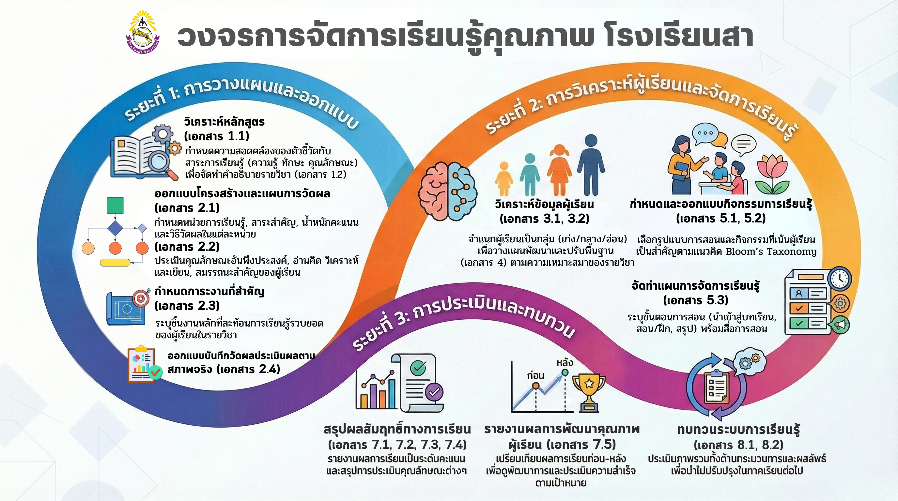

ระบบส่งระบบเรียนรู้ – โรงเรียนสา
ปีการศึกษา:
ภาคเรียน
ครั้งที่ส่ง

| ที่ | ชื่อ-นามสกุล | กลุ่มสาระการเรียนรู้ | เลขที่บันทึกข้อความ | วันที่ |
|---|
สำหรับภาคเรียนที่ 2 ปีการศึกษา 2569
สำหรับภาคเรียนที่ 2 ปีการศึกษา 2569
สำหรับหัวหน้ากลุ่มสาระ รองผู้อำนวยการ ผู้อำนวยการ และผู้ดูแลระบบ
| วันที่ส่ง | ผู้ส่ง | กลุ่มสาระ | เลขที่ | การลงนาม | ดำเนินการ |
|---|
| วันที่ส่ง | ชื่อผู้ส่ง | วิชาที่ส่ง (วิชาแรก) | การลงนาม | ดำเนินการ |
|---|
0
0
0
0
| ครั้งที่ | วันที่ส่ง | ชื่อผู้ส่ง | ชื่อวิชา (วิชาแรก) | กลุ่มสาระฯ | สถานะ | ความคิดเห็น |
|---|